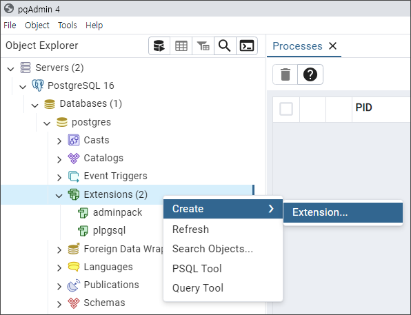

postgreSQL 설치
작성일: 2024. 7. 15.
설치 파일 다운로드
이 문서는 postgreSQL 16.3 설치 방법에 대한 설명이다.
다음 순서대로 진행한다.
postgreSQL 16 윈도우 버전 다운로드 페이지로 이동한다.
* postgreSQL 홈페이지에서는 다운로드를 제공하지 않음.
다음과 같이 윈도우 버전을 클릭해 다운로드 받는다.
프로그램 설치
기본 값 그대로 사용
기본 값 그대로 사용
기본 값 그대로 사용
postgreSQL의 관리자는 기본적으로 postgres라는 아이디를 가진다. 그 비밀번호를 설정한다.
테스트용 설치라면 쉬운 비밀번호를,
실 사용을 위한 설치라면 매우 어려운 비밀번호를 설정한다.
수업 중에는 이 비밀번호를 postpw 로 하겠다.
기본 값 5432 포트를 그대로 사용
기본 값 그대로 사용한다.
여태까지의 설정을 보여주고 있다.
이렇게 postgreSQL 설치는 별다른 설정없이 완료된다.
postgis 설치 1/2
stack builder에서 위와 같이 서버의 위치를 "PostgreSQL 16(x64) on port 5432"로 설정해 준다.
위와 같이 PostGIS를 선택한다.

postgreSQL 실행
postgreSQL은 따로 실행버튼이 없다. 설치하면 저절로 내부적으로 실행된다. 별도의 화면도 없다.
postgreSQL 접속
윈도우 키를 누른다.
팝업되는 창에서 아래로 내리다 보면 P로 시작하는 프로그램들이 보이고 그 아래 PostgreSQL 16이라는 메뉴도 보인다. 방금 설치한 프로그램들이다.
아래와 같이 pgAdmin 4 프로그램을 실행한다. postgreSQL 서버에 접속하는데 사용하는 클라이언트 프로그램이다.
아래와 같이 "PostgreSQL 16"을 더블클릭해 방금 설치한 postgreSQL 서버에 접속한다.
아까 정해준 postgres의 비밀번호를 입력한다.
아래와 같이 서버에 접속한 모습을 볼 수 있다.
이렇게 서버에 접속되면 postgreSQL 설치가 잘 된 것이다.
postgis 설치 2/2

pgAdmin에서 위와 같이
Servers > PostgreSQL 16 > Databases > Postgres > Extensions를 오른쪽 클릭한 다음,
Create > Extension을 선택한다.
위와 같이 postgis를 선택하고 [save] 버튼을 누른다.
postgis가 설치되었다.